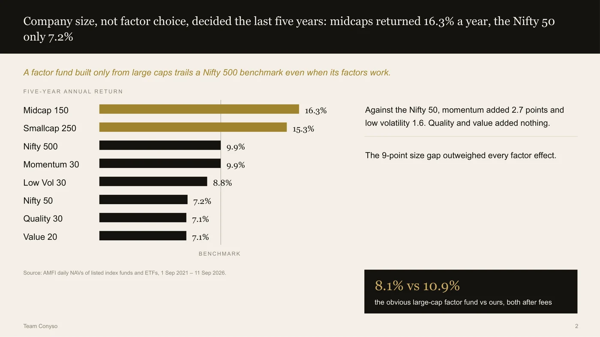
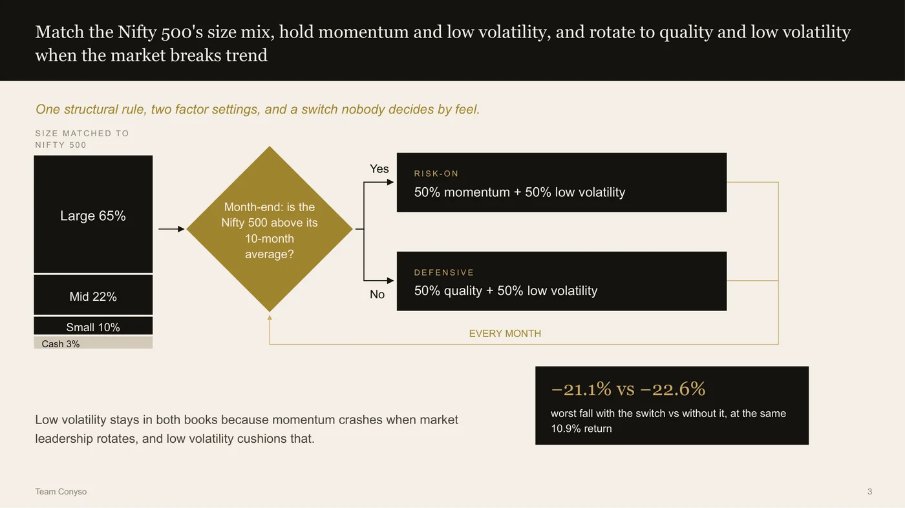
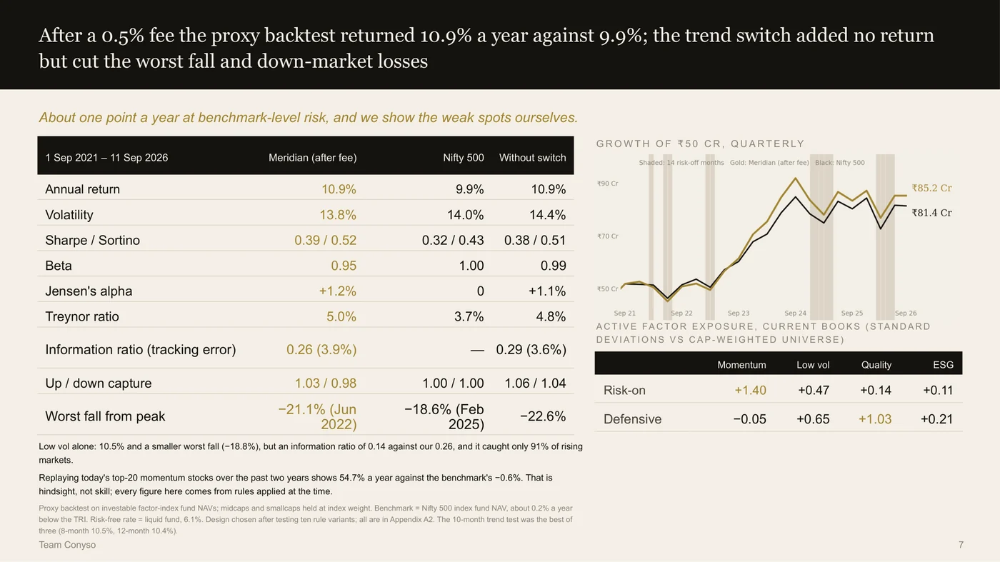
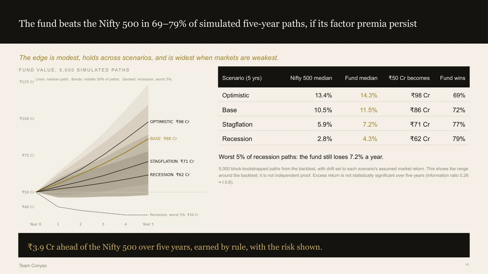

Certamus · Case competition
Seeking Alpha 2026
Findmenon, NMIMS · 19 September 2026 · Finalist, Final round
The brief below is restated in our own words. The original belongs to the organiser.
We built the obvious fund first, and it lost
The task was a long-only Indian equity fund. Fifty crore. We called it Meridian Crest.
The obvious build is a large-cap factor fund: take the top 100 or 200 names, tilt to momentum and quality, rebalance. That is roughly what everyone does. We built it.
It returned 8.1% a year. The benchmark returned 9.9%. It lost, and its factors were working.
The reason had nothing to do with factors
Midcaps returned 16.3% a year over the period. The Nifty 50 returned 7.2%. Nine points, just for being smaller.
Against that, the factors are rounding errors. Momentum added 2.7 points over the Nifty 50 and low volatility 1.6. Quality and value added nothing at all.
So a fund that picks only from large caps, benchmarked against the whole market, starts nine points in a hole and spends its factor edge climbing out. Most factor funds that lag their benchmark are losing to a size mismatch they never chose and mostly do not discuss.
The fix is structural and slightly boring: copy the benchmark's size mix. 65% large, 22% mid, 10% small, 3% cash. Take your bets inside each bucket, never across them. Our measured size exposure against the benchmark came out at 0.00, which is the point — this is not a midcap bet, it is the removal of one.

The slide the whole argument rests on. Midcaps returned 16.3% a year against the Nifty 50's 7.2%: nine points, just for being smaller. Against that, momentum added 2.7 points and low volatility 1.6, and quality and value added nothing at all.
One question a month
On top of that sits a single rule. At each month end: is the Nifty 500 above its 10-month average? If yes, hold momentum and low volatility. If no, hold quality and low volatility.
That is the whole machine. Low volatility stays in both books deliberately, because momentum falls apart exactly when market leadership rotates.
Underneath, every stock comes out of a formula rather than a view. Momentum is the 12-month return skipping the most recent one, divided by volatility — the skip is there because stocks that just ran hard tend to give some back. Every name is scored against its own size group, so a small cap is not competing with Reliance. Five hundred stocks become 450 eligible after the screens, and we hold 28. Past roughly 25 names you have diversified away most single-stock risk and each additional name dilutes the factor you are being paid for.
Sizing is inverse to volatility, capped at 7% per stock. We deliberately did not use mean-variance optimisation: five years of return data is far too noisy for it, and it would have looked precise while being wrong.

One structural rule, two factor settings, and a switch nobody decides by feel.
Did it work, and the three things that do not flatter us
10.9% a year against 9.9%, after a 0.5% fee. Sharpe 0.39 against 0.32.
Then the three we put in the talk before anyone asked.
The switch makes no money. Without it the return is the same 10.9%. What it buys is a gentler fall — 21.1% instead of 22.6% — and smaller losses on down days. That is worth having, but it is not what it looks like.
Strip out the factor exposure and our alpha is about zero. We were not claiming to be good stock pickers. We were claiming cheap, disciplined exposure to two factors without the size hole.
And five years is not long enough to call any of it statistically significant. The information ratio of 0.26 is roughly a t-statistic of 0.6. The 10-month lookback was the best of three we tested, and all ten designs we tried are in the appendix rather than only the one that won.
One more, unprompted: the backtest runs on investable factor index funds, not on our own 28 stocks, because point-in-time fundamentals for all 500 companies are not publicly available. We labelled it a proxy on the slide rather than letting it read as a live track record.

The results slide, with the weak spots on it rather than in the appendix: the switch adds no return, the alpha after factors is about zero, and five years is not long enough for any of it to be significant.
The ESG gap we raised ourselves
ESG here is a gate, a tilt and a floor. Out: tobacco, alcohol, gambling, coal. Also out by written rule, for 24 months, anyone hit with a regulator's adverse order, a material restatement or criminal charges.
48% of the fund is rated Strong or Excellent against a 35% mandate. And the awkward part, which we said before the panel could ask: our rating source covers only 42% of the index, so 39% of the book is simply unrated, and unrated names never count toward that floor.
We also tested what the screens cost. Turn them all off and 21 of the 28 names are unchanged; the seven that move lift the average signal by 0.06 of a standard deviation. So it is an ethics policy we can afford, rather than performance quietly given away.
Why not just buy the index
That is the right question to ask a fund manager, so Drishti closed on it rather than avoiding it.
After our fee and our trading, about 0.7 to 1 point a year ahead of a Nifty 500 index fund, with a beta under 1. On fifty crore that is roughly 3.9 crore over five years. If we stop clearing that, a client should fire us — and we wrote down in advance what "stop clearing it" means: tracking error above 8%, or trailing the index by more than five points over twelve months.

The closing slide: the fund beats the benchmark in 69 to 79% of simulated five-year paths, and the margin is widest when markets are worst.
What we would do differently
The proxy backtest is the real limitation, and we knew it going in. Getting point-in-time fundamentals — even for a single size bucket, even for three years — would let us test the actual holdings rather than a stand-in for them. That is the difference between a strategy we can describe and one we can evidence, and it is the first thing we would buy time for.
Who did what
- Krishna ChagtiBuilt the selection and sizing rules, and presented the live positioning and the scenario and stress work, including when the fund should be fired
- Krishay NayyarOwned the structural rule and the regime switch, and presented the results, including the three things about them that do not flatter us
- Drishti SoniOpened on the finding, built the ESG gate and the honest gap in it, and closed on whether a client should just buy the index instead